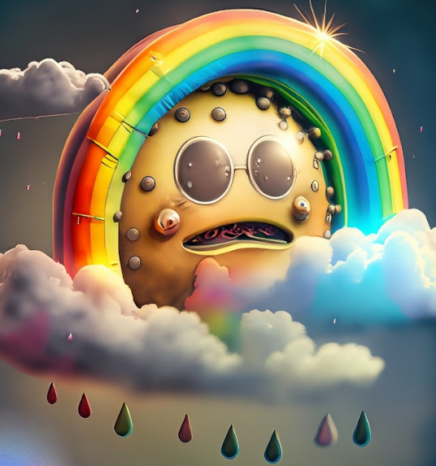

Min vackra sommarberättelse
Det tråkigaste jag gjort i sommar var att få matförgiftning men jag har också gjort en rolig grej och det var att prata med personer
Jag har badat 2(?) gånger och det var kallt
Det godaste jag åt i somras var kyckling och jag skylle vilja jämnföra smaken med kyckling
En tv serie som jag upptäckte i somras var Psych och den skulla jag rekommendera till alla som är cool
En person som jag träffade i somras var Herman och jag skulle vilja citera han genom att säga "Jag tråk"
Vid ett tillfälle i somras åkte jag till en plat som var en och plats.
Jag skulle vilja sammanfatta min sommar med tre ord: typ ganska tråkig
En helt okej sommar men nog har jag allt längtat efter att jag ska få börja skolan igen och jag tror att detta år på NTI kommer att bli ok